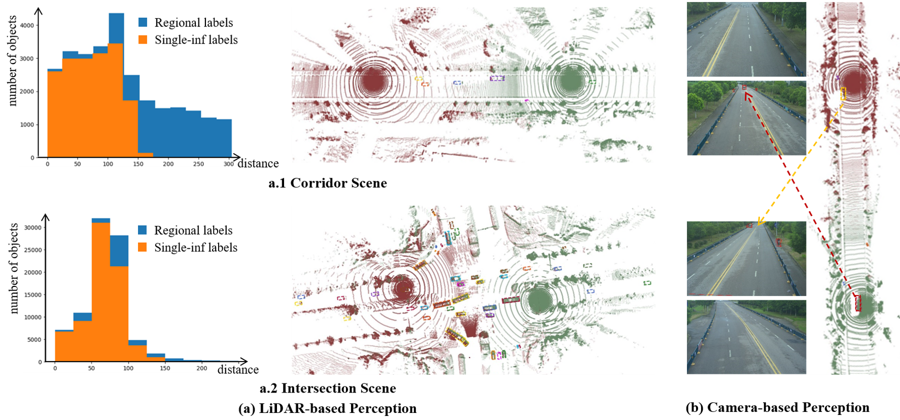
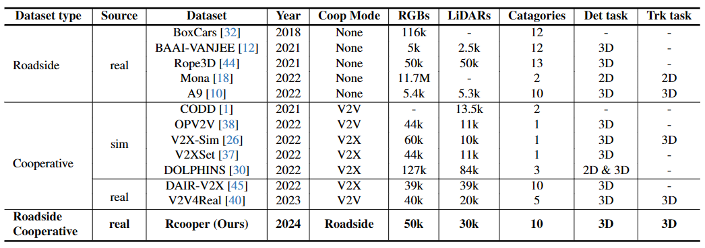

The value of roadside perception, which could extend the boundaries of autonomous driving and traffic management, has gradually become more prominent and acknowledged in recent years. However, existing roadside perception approaches only focus on the single-infrastructure sensor system, which cannot realize a comprehensive understanding of a traffic area because of the limited sensing range and blind spots. Orienting high-quality roadside perception, we need Roadside Cooperative Perception (RCooper) to achieve practical area-coverage roadside perception for restricted traffic areas. Rcooper has its own domain-specific challenges, but further exploration is hindered due to the lack of datasets. We hence release the first real-world, large-scale RCooper dataset to bloom the research on practical roadside cooperative perception, including detection and tracking. The manually annotated dataset comprises 50k images and 30k point clouds, including two representative traffic scenes (i.e., intersection and corridor). The constructed benchmarks prove the effectiveness of roadside cooperation perception and demonstrate the direction of further research.
A. The first real-world, large-scale dataset, RCooper, is released to bloom research on roadside cooperative perception for practical applications. All the frames and scenes are captured in real-world scenarios.
B. More than 50k images and 30k point clouds manually annotated with 3D bounding boxes and trajectories for ten semantic classes are provided in our RCooper, which enables the training and evaluation of roadside cooperative perception approaches in real-world scenarios.
C. Two cooperative perception tasks, including 3D object detection and tracking, are introduced, and comprehensive benchmarks with SOTA methods are reported. The results show the effectiveness of roadside cooperation and demonstrate the direction of further research.

Independent roadside 3D perception (red point clouds) is limited by sensing range and blind spots. (a) The infrastructure-side cooperation can effectively extend the sensing range to cover the whole corridor scene, and the observation from multiple views can weaken the impact of occlusion in the complex intersection scene. (b) The area under the infrastructure is the camera's blind spot, which is perceptible from the adjacent infrastructure's camera.

Comparisons among the representative public perception dataset for road systems.
@inproceedings{hao2024rcooper,
title={RCooper: A Real-world Large-scale Dataset for Roadside Cooperative Perception},
author={Hao, Ruiyang and Fan, Siqi and Dai, Yingru and Zhang, Zhenlin and Li, Chenxi and Wang, Yuntian and Yu, Haibao and Yang, Wenxian and Jirui, Yuan and Nie, Zaiqing},
booktitle={The IEEE/CVF Computer Vision and Pattern Recognition Conference (CVPR)},
year={2024}
}